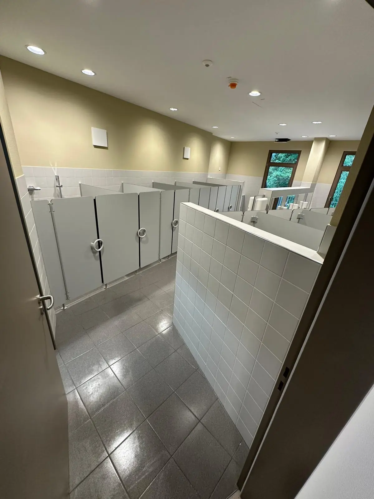
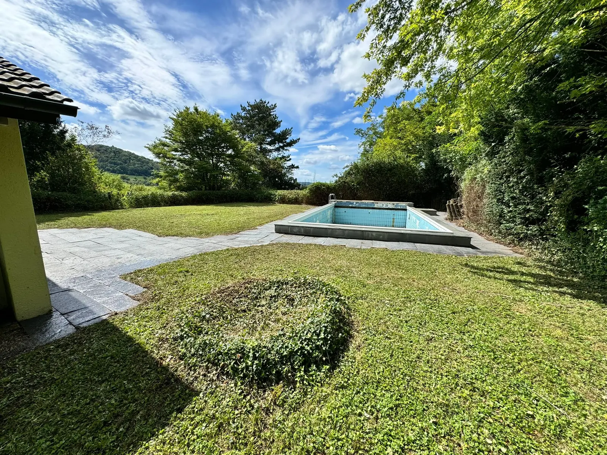
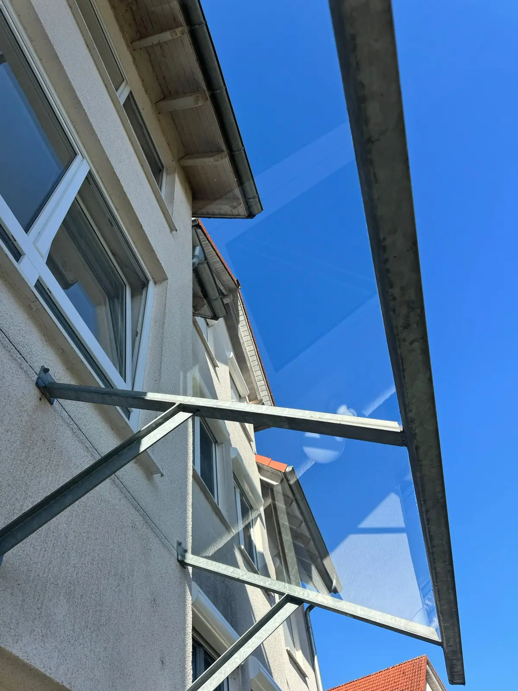

Zuverlässig
Klare Absprachen und nachvollziehbare Ausführung.

Hausmeisterservice Heilbronn, Oedheim und Umgebung
Gebäudereinigung, Gartenpflege, Winterdienst, Fensterreinigung, Entrümpelung und Objektbetreuung aus einer Hand. Persönlich, regional und sichtbar professionell für Oedheim, Heilbronn, Neckarsulm und Umgebung.
Schnell zur passenden Leistung
Wählen Sie direkt die passende Leistung für Ihr Objekt im Raum Heilbronn. Jede Leistungsseite enthält Ablauf, Vorteile, Einsatzgebiet und Kontaktmöglichkeit.
Warum ALH Hausmeisterservice?
Wir setzen auf echte Projektbilder, klare Absprachen und direkte Kontaktmöglichkeiten. So sehen Kunden im Raum Heilbronn, Oedheim und Umgebung ehrlich, welche Arbeiten ALH Hausmeisterservice übernimmt.
Klare Absprachen und nachvollziehbare Ausführung.
Termine werden passend zum Objektalltag geplant.
Direkter Kontakt statt anonymer Vermittlung.
Leistungen und Umfang werden vorher abgestimmt.
Verlässlich rund ums Objekt
ALH Hausmeisterservice unterstützt Eigentümer, Hausverwaltungen, Praxen, Büros und Gewerbekunden mit klar abgestimmten Leistungen. Ob regelmäßige Treppenhausreinigung, Gartenpflege Heilbronn, Winterdienst Heilbronn oder laufende Objektbetreuung: Sie erhalten eine praktische Lösung, die zu Ihrem Objekt passt.

Zuverlässige Betreuung für Wohn- und Gewerbeobjekte im Raum Heilbronn: regelmäßige Kontrollen, Pflege, Koordination und schnelle Hilfe bei kleinen Anliegen.
Mehr erfahrenSaubere Eingangsbereiche, Flure, Sanitärbereiche und Nutzflächen mit abgestimmten Reinigungsintervallen für gepflegte Immobilien.
Mehr erfahrenGründliche Reinigung von Treppen, Geländern, Podesten, Briefkastenanlagen und Eingangsbereichen für einen starken ersten Eindruck.
Mehr erfahren
Diskrete, hygienische und planbare Reinigung von Arbeitsräumen, Wartebereichen, Behandlungszimmern und Nebenflächen.
Mehr erfahren
Rasenpflege, Heckenschnitt, Beetpflege, Laubentfernung und saisonale Pflege für Außenanlagen in Heilbronn und Umgebung.
Mehr erfahren
Verlässlicher Räum- und Streudienst in der kalten Jahreszeit für sichere Wege, Zufahrten und Eingangsbereiche.
Mehr erfahrenEchte Projektbilder
Ein kurzer Einblick in echte Arbeiten: Gartenpflege, Glasreinigung, PV-Anlagenreinigung, Entrümpelung und Sonderreinigung im Raum Heilbronn und Oedheim. Weitere Bilder finden Sie in der Galerie.




Wir klären Zustand, Umfang und gewünschte Intervalle direkt am Objekt oder telefonisch.
Sie erhalten eine nachvollziehbare Empfehlung für Reinigung, Pflege oder Betreuung.
Die Arbeiten werden sauber, planbar und mit Blick für Details erledigt.
Rufen Sie an oder senden Sie eine Anfrage. ALH Hausmeisterservice meldet sich zeitnah zurück.
Kontakt aufnehmen